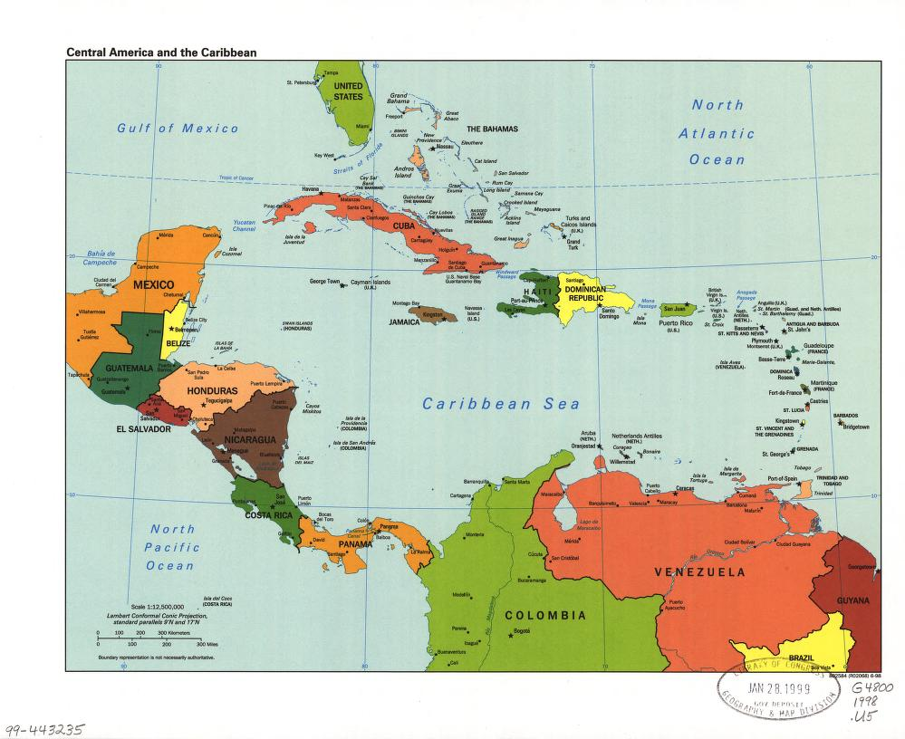

We live in a very connected world. From social interactions to predator-prey relationships, connections have a large impact on how systems behave. The purpose of this activity is to introduce an important mathematical tool used to model network connections.
The objectives of this activity are that you can...
Objectives
represent a network using a graph or directed graph.
determine basic properties of a graph.
Let’s get to work....
A network is a set of entitities which have a rule that defines when two entities in the set are related. This is a very broad concept which arises in various contexts. For example, a network may consist of a set of twenty neighborhoods (call them A through T), with the rule that two neighborhoods are related if there is a road that connects them.
In your group, brainstorm examples of three different networks that you are familiar with.
Mathematically, we can represent networks with graphs. Though you may have heard this term in a math class previously, it is likely different than what you are picturing. Below is an example of a graph of the neighborhood network we described above.
Figure3.1.1.A graph whose vertices, labeled A through T, represent neiborhoods, and whose edges represent roads connecting neighborhoods.
Remark3.1.2.Edges Listed as Pairs.
A graph can also be represented by giving a set of coordinate pairs. Two vertices are listed as a pair if there is an edge between them. The graph above would be represented as coordinate pairs as follows:
Let’s make some important observations about graphs using this example:
An entity (in this example, a neighborhood) is represented by a point called a vertex. Two entities are related (in this example, there is a road connecting two neighborhoods) if they are connected by a line called an edge. If two vertices are connected by an edge, we call them neighbors.
Remark3.1.3.
It is important to note that this graph communicates nothing about the actual physical location of each neighborhood. You can move the vertices anywhere you wish (try it!), and it would still be the same graph. The graph communicates only which entities are in the network, and how they are related to each other.
The number of edges coming from one vertex is called the degree of that vertex. For example, the degree of vertex A is \(4\text{,}\) and the degree of vertex S is \(1\text{.}\)
A path between two verices is a sequence of edges that connects one vertex to the other. A graph is connected if there is a path between any two verices. Otherwise, it is disconnected. For example, the graph of above is disconnected because there is no path from vertex M to vertex A. However, the graph obtained by ommitting vertices K through O is connected, as is the graph consisting of only vertices K through O.
A graph can be useful for making qualitative observations about a network. For example, while there is no path from vertices K through O to other vertices, they are highly connected to each other. Also, vertices A, J, and T seem to be structurally important neighborhoods. There are many roads connecting them to other neighborhoods (they have a high degree), and if we got rid of them, many more neighborhoods would become disconnected. We’ll make these ideas more precise in the next section.
Let’s practice creating graphs to represent networks. Use the interactive as needed if it is helpful to recall the various components that comprise a graph. After you have created a graph, answer the following questions.
Which vertex in your graph has the highest degree?
Is your graph connected?
What do your previous answers mean in the context of your network?
Remark3.1.4.A map of Central America and the Carribean.

A geographical map of countries in Central America and the Carribean. The countries that share a border are listed as the following pairs:
There are variations of graphs that can be obtained by adding additional structure based on the needs of your model. We present one such variation here due to its connection with our topic from Chapter 2.
Definition3.1.5.
A directed graph is a graph whose edges have a specified direction. That is, there are two different edges that could connect vertices A and B: the edge AB (“A to B”) and the edge BA (“B to A”).
The visual difference in directed graphs is that the edges are represented by arrows, which provide the additional information of direction. For example, directed graphs can be used to represent predator-prey relationships within an ecosystem. Take a moment to interpret the directed graph below in your group.
Figure3.1.6.A directed graph showing the predator-prey relationships within an ecosystem.
Remark3.1.7.Edges Listed as Ordered Pairs.
A directed graph can also be represented by giving a set of ordered coordinate pairs. Two vertices are listed as a pair if there is an edge going from the first listed vertex to the second. The graph above would be represented as ordered coordinate pairs as follows:
Another example of directed graphs are the system diagrams that we’ve been using to visualize stock-flow models. The vertices of such a graph are the stocks, rate-controlling processes, sources/sinks, and parameters in the model, while the directed edges are the inflow/outflow arrows and the dependency links. Here is an example from Section 2.4:
Figure3.1.8.On the left, the stock-flow model for the energy in solar panels is represented by a system diagram. On the right, the model is represented as a directed graph.
Remark3.1.9.Edges Listed as Ordered Pairs.
The directed edges listes as ordered pairs for this graph would be as follows:
In your group, brainstorm three networks that you think would be best represented as a directed graph. Then pick one of these networks to create a directed graph for below. You may simplify the network or represent just part of the network to make this achievable in the timeframe available.
Use the interactive as needed if it is helpful to recall the various components that comprise a directed graph.
Reflection.
Let’s reflect on what we’ve learned, and what we still have questions about.
Why might a graph be useful when analyzing questions about sustainability?
Which types of networks are best modeled by directed graphs?